Я проектный менеджер, который умеет брать разрозненные требования, людей и ограничения и превращать это в управляемый проект. Ниже — реальные артефакты, которые я делала в проектах: планирование, процессы, роли, системы и аналитика.
Проект INTERCHARM. Я построила детальный план проекта в Microsoft Project: этапы, зависимости, контрольные точки и критический путь. Это позволило управлять сроками, аргументированно обсуждать изменения с заказчиком и заранее видеть риски срыва сроков.
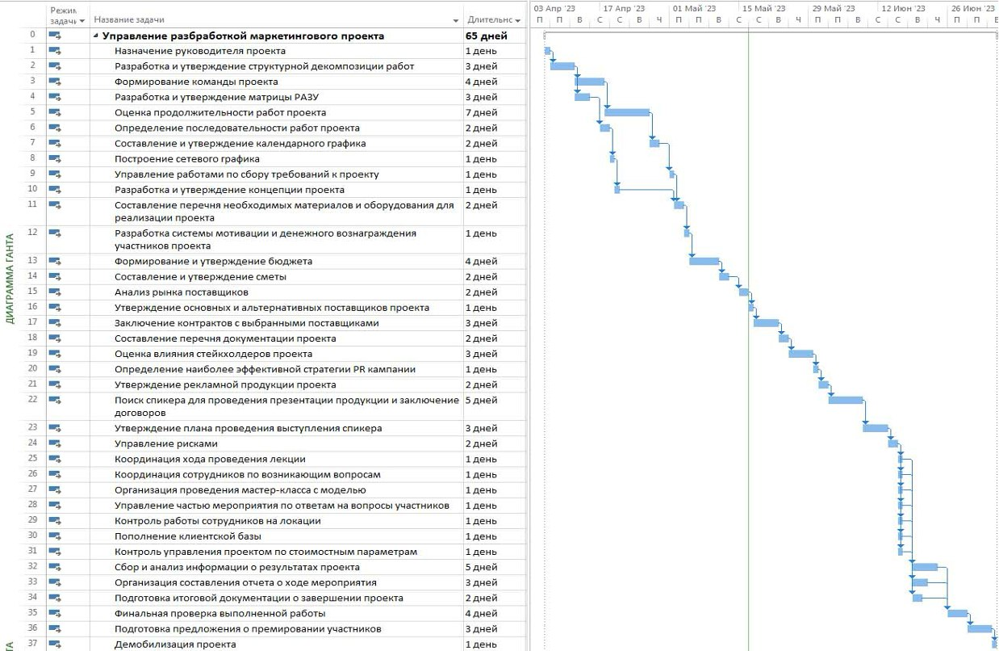Я использовала сетевой график для проверки логики проекта и поиска критического пути. Это помогло выявить работы, которые напрямую влияют на срок завершения.
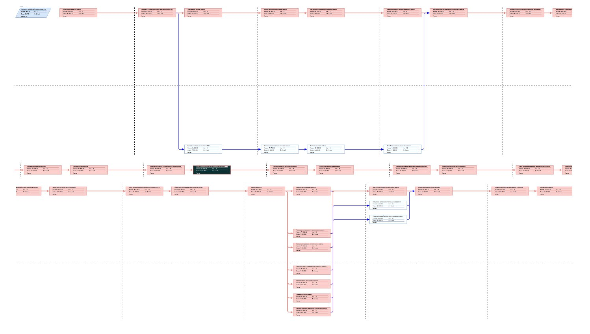IDEF0 — моделирование бизнес-процессов компании Л’Этуаль. Я самостоятельно описала бизнес-процессы: зафиксировала входы, выходы, управляющие воздействия и ресурсы.
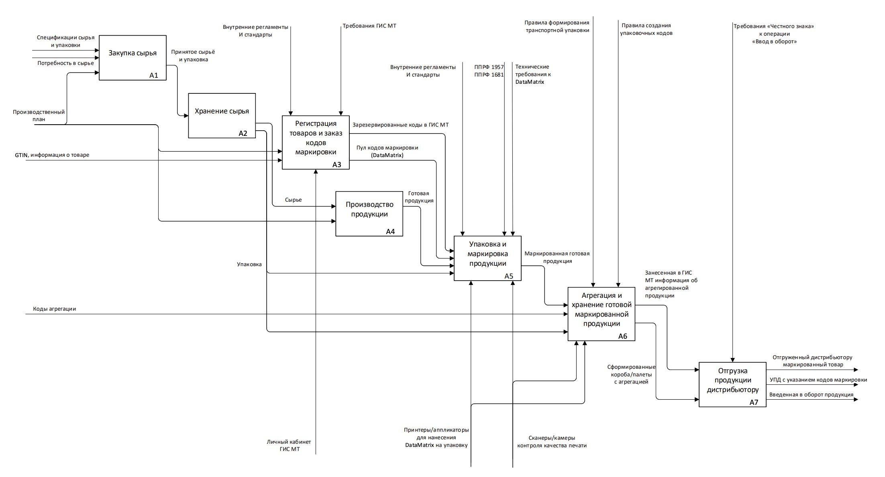 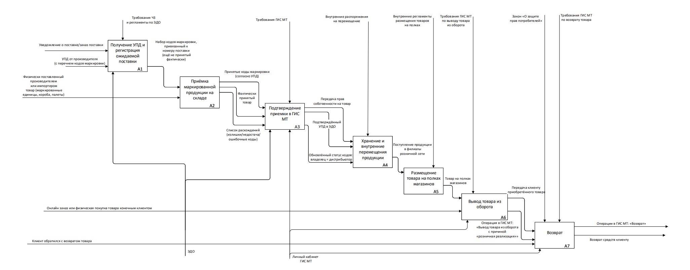Я спроектировала BPMN-схему процесса выявления и обработки некорректных данных. Процесс стал прозрачным: понятны роли, точки контроля и сценарии отклонений.
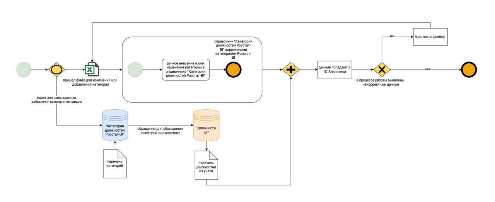BPMN-схема процесса оценки решений для компании «ВкусВилл». Я описала и формализовала бизнес-процесс оценки и проведения экспертизы решений, зафиксировав роли, точки принятия решений и альтернативные сценарии.
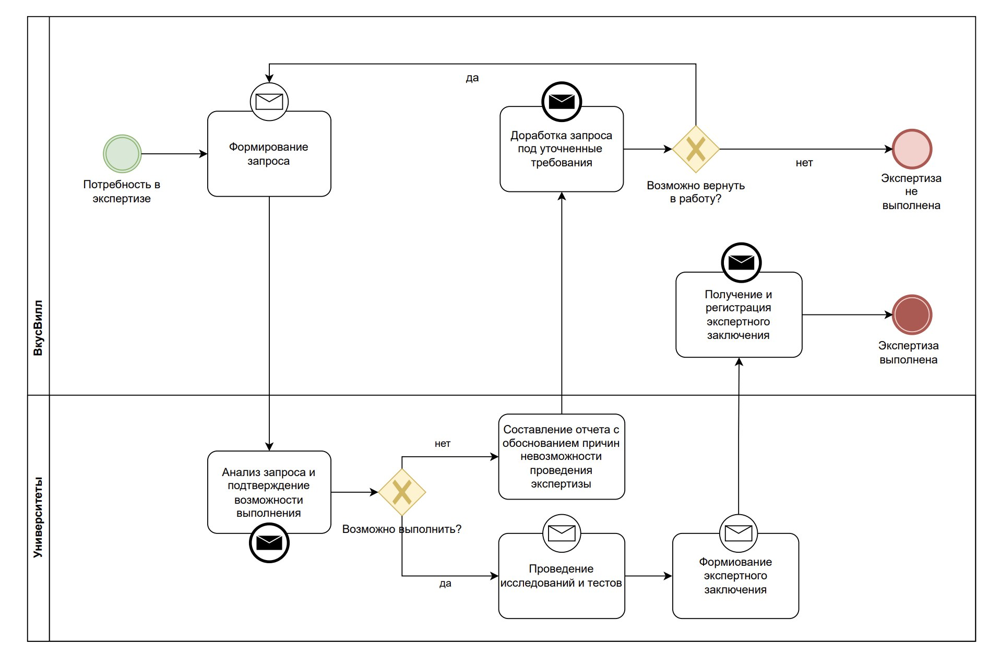Я разработала матрицу RACI для проекта, чтобы зафиксировать зоны ответственности участников. Это снизило количество конфликтов и ситуаций, когда задачи «зависали» без владельца.
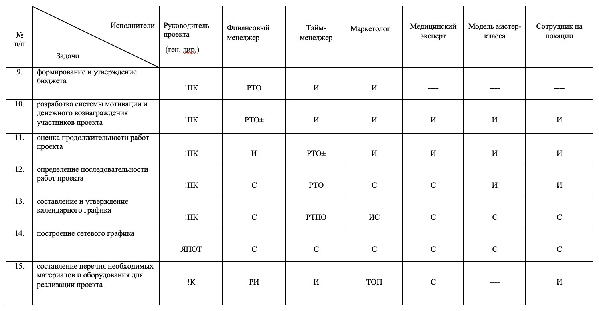Я собрала и структурировала ключевую информацию по проекту в единой таблице. Команда и стейкхолдеры получили единый источник актуальных данных.
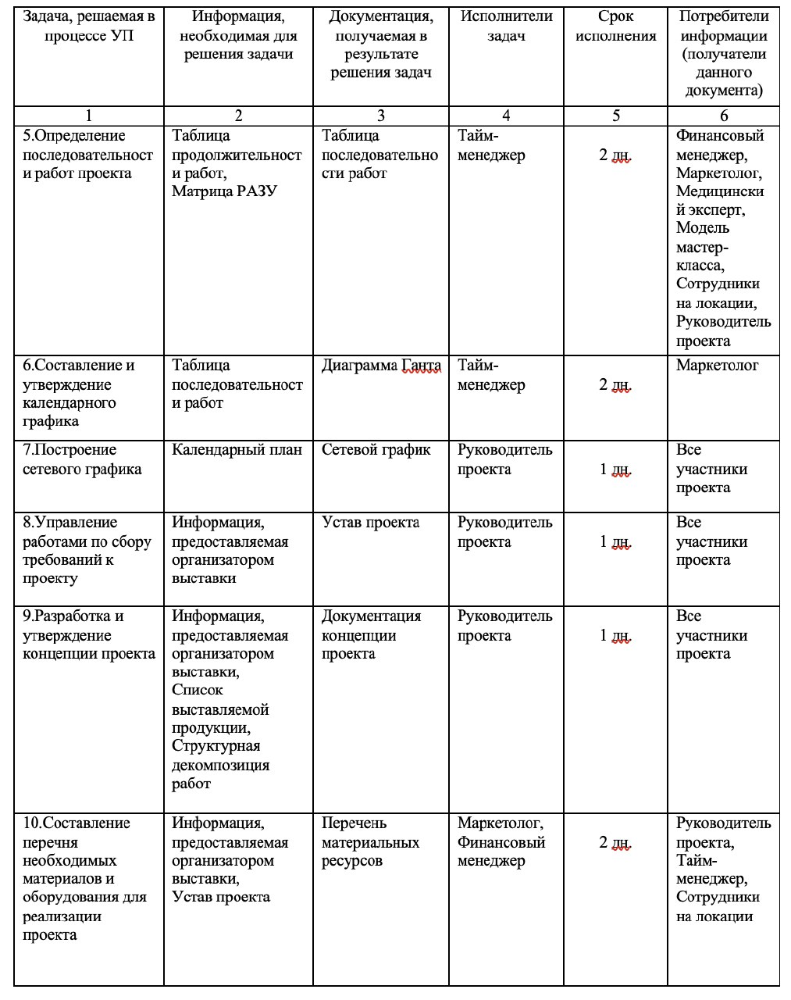Я участвовала в администрировании 1С: пользователи, права доступа, базовые настройки. Это позволило учитывать технические ограничения системы при принятии решений.
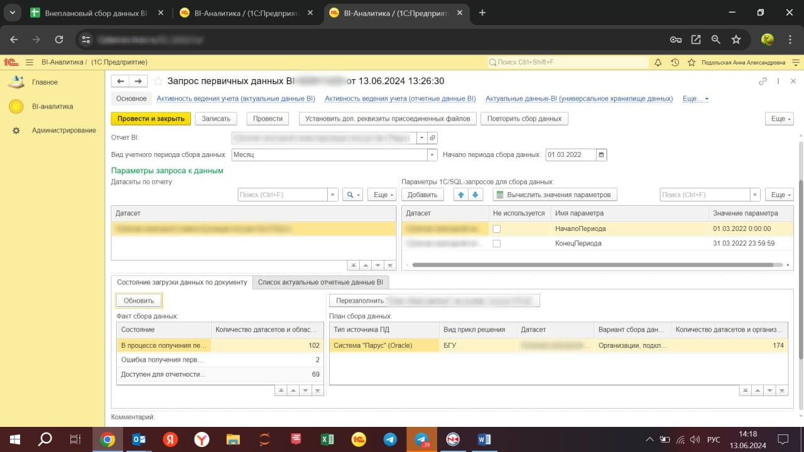Я подготовила наглядную модель для руководства, которая позволяет быстро оценить текущие ограничения, риски и эффекты от изменений ролей и прав доступа. Схема использовалась как инструмент для принятия управленческих решений и согласованного внедрения улучшений ИТ-системы.
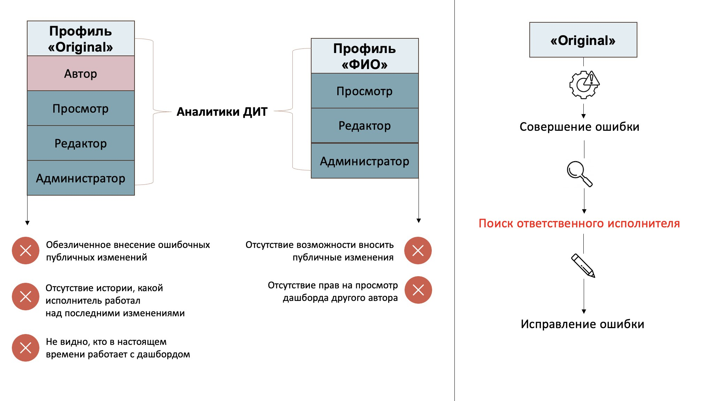 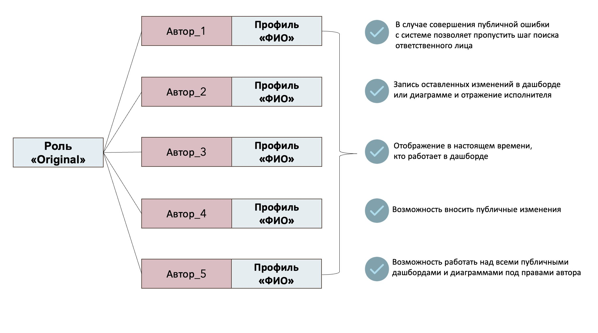Я инициировала и реализовала переход от неструктурированного Word-файла к ведению задач в Jira. В результате появились статусы, приоритеты и прозрачность выполнения.
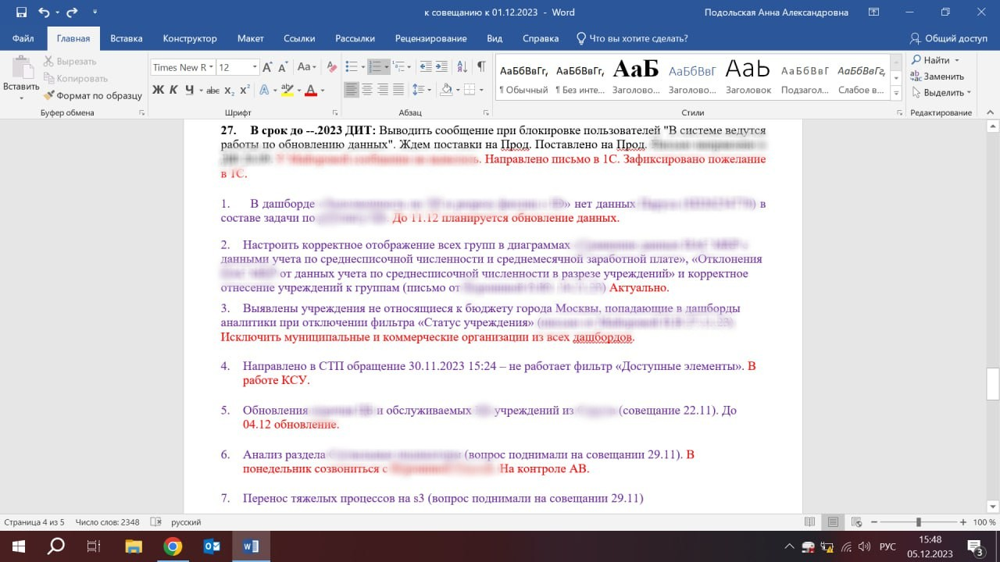 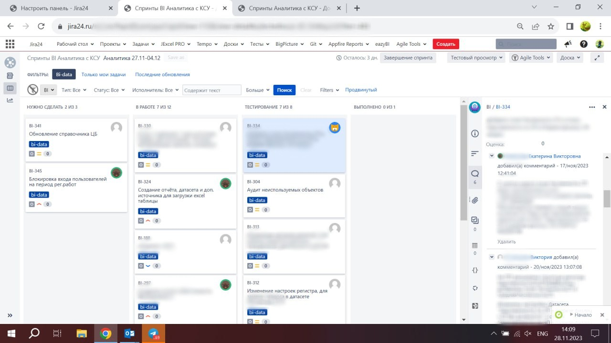Я выстроила структуру проекта в Jira: эпики, задачи, подзадачи и связи между ними. Проект стал управляемым и прозрачным для всех участников.
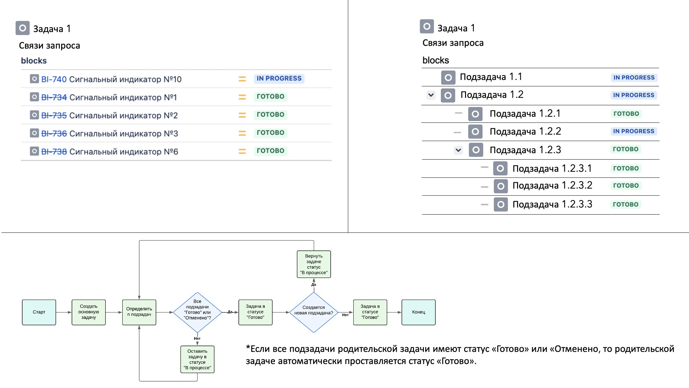 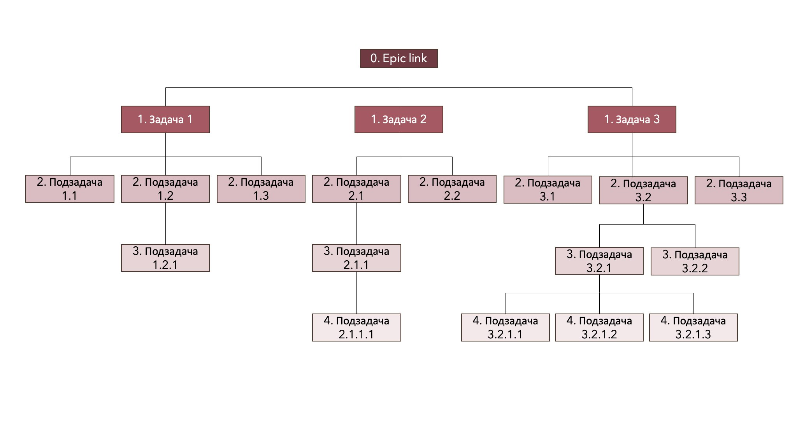Я составила реестр рисков проекта с оценкой вероятности и влияния. Это позволило заранее подготовить меры реагирования.
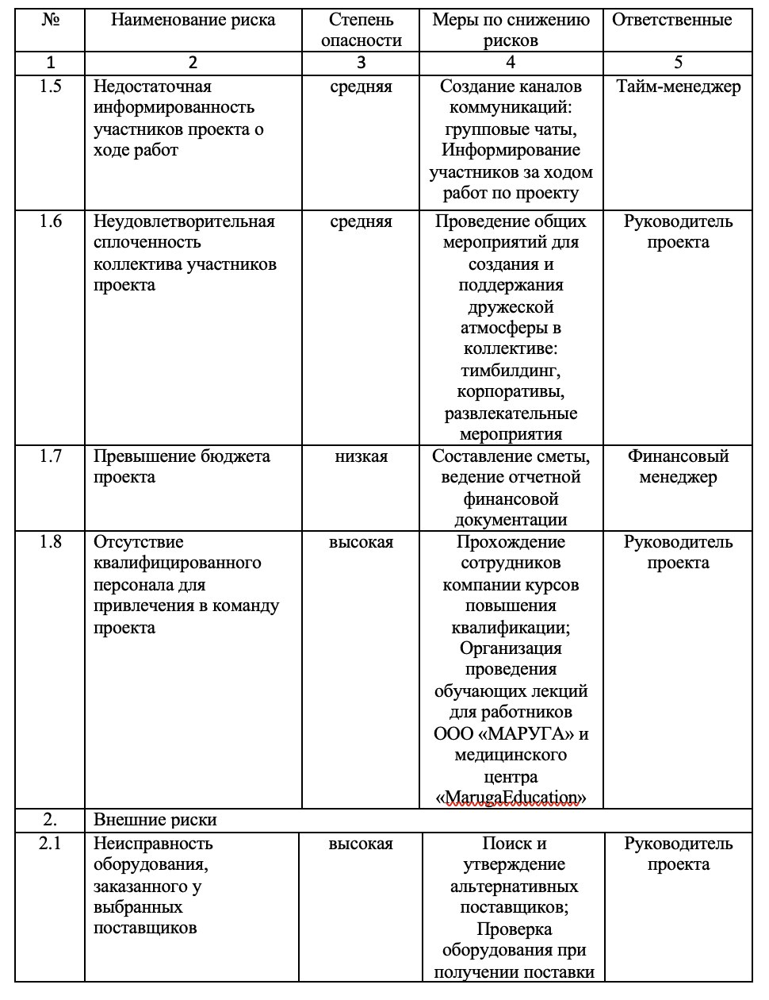Я спроектировала дашборд для анализа рабочего времени сотрудников. Руководство получило наглядную картину загрузки и фактических трудозатрат.
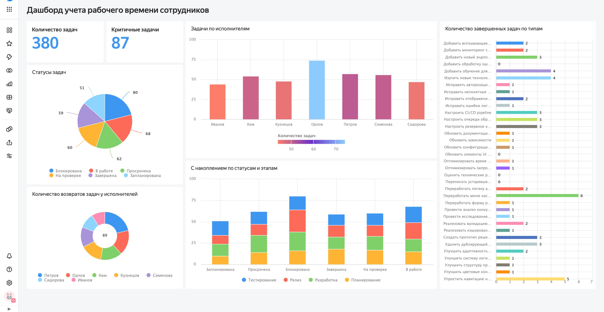